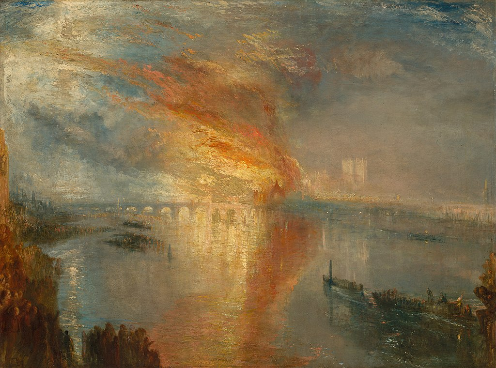

<head>
<meta charset="UTF-8" />
<meta name="keywords" content="drawing, painting" />
<meta name="description" content="drawings by Sunjy" />
<title>Sunjy</title>
<link rel="shortcut icon" type="image/x-icon" href="../../mImages/mCommon/favicon.ico" media="screen" />
<link rel="stylesheet" type="text/css" href="../../mCsses/mCommon/mCssA.css" />
<link rel="stylesheet" type="text/css" href="../../mCsses/mCommon/mCssB.css" />
<link rel="stylesheet" type="text/css" href="../../mCsses/mCommon/mCssC.css" />
<link rel="stylesheet" type="text/css" href="../../mCsses/mCommon/mCssD.css" />
<link rel="stylesheet" type="text/css" href="../../mCsses/mContent/mCssA.css" />
<link rel="stylesheet" type="text/css" href="../../mCsses/mContent/mCssB.css" />
<link rel="stylesheet" type="text/css" href="../../mCsses/mContent/mCssC.css" />
<link rel="stylesheet" type="text/css" href="../../mCsses/mContent/mCssD.css" />
</head>
<script type="text/javascript" src="../../mScripts/mContent/mContentAA.js" /></script>
<script type="text/javascript" src="../../mScripts/mContent/mContentAB.js" /></script>
<script type="text/javascript" src="../../mScripts/mContent/mContentAC.js" /></script>
<script type="text/javascript" src="../../mScripts/mContent/mContentAD.js" /></script>
<script type="text/javascript"></script> 
<script type="text/javascript">
document.write('<div class="mImgAbsolute"></div>');
/*
document.write('<p class="mFontSizeBColor" />From a white paper...</p>');
document.write('<table class="center"><tr><td>');
document.write('');
document.write('</td></tr></table>');
*/
</script>


<script type="text/javascript">
document.write('<p class="mFontSizeBColor" />The Burning of the Houses of Parliament</p>');
document.write('<p class="mFontSizeSColor" />“The Burning of the Houses of Parliament” by J. M. W. Turner depicts the fire that broke out at the Houses of Parliament in 1834. Turner himself witnessed the Burning of Parliament from the south bank of the River Thames, opposite Westminster. <br><br>The painting shows the Houses of Parliament overwhelmed in golden flames, which are consuming the chamber of the House of Commons.<br><br>This depiction is the view from downstream, close to Waterloo Bridge, and shows the fire and smoke blowing dramatically over the Thames as the London spectators look on from the river bank and boats.<br><br>Turner made multiple sketches using both pencil and watercolor in two sketchbooks from different vantage points, including from a boat.<br><br>Turner also painted an earlier painting in the same year, on the same subject, with a perspective from further upstream, next to Westminster Bridge.<br><br>The colors and composition of these paintings may have influenced Turner’s conception of his portrayal of “The Fighting Temeraire,” which also depicts the passing of an old order.<br><br>Many of Turner’s paintings can be found in museums across the world, depict famous landscapes and seascapes.<br></p>');
document.write('<table class="center" /><tr><td>');
document.write('<br>The painting shows the Houses of Parliament overwhelmed in golden flames, which are consuming the chamber of the House of Commons.<br><br>This depiction is the view from downstream, close to Waterloo Bridge, and shows the fire and smoke blowing dramatically over the Thames as the London spectators look on from the river bank and boats.<br><br>Turner made multiple sketches using both pencil and watercolor in two sketchbooks from different vantage points, including from a boat.<br><br>Turner also painted an earlier painting in the same year, on the same subject, with a perspective from further upstream, next to Westminster Bridge.<br><br>The colors and composition of these paintings may have influenced Turner’s conception of his portrayal of “The Fighting Temeraire,” which also depicts the passing of an old order.<br><br>Many of Turner’s paintings can be found in museums across the world, depict famous landscapes and seascapes.<br>" />');
document.write('</td></tr></table>');
</script>


